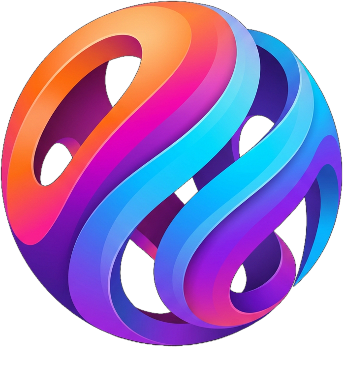

<!-- ============================================================
     Caminotich — Hero Intro (كود الدمج النهائي)
     ضعي الملفات الأربعة في نفس مجلد الصفحة (أو عدّلي المسارات):
       hero-city.mp4 , hero-city.webm , hero-poster.jpg , logo-sphere.png
     ثم الصقي هذا الكود مكان الهيرو الحالي.
     ============================================================ -->

<div class="cmt-hero" id="cmtHero">
  <video class="cmt-bg" autoplay muted loop playsinline preload="auto" poster="hero-poster.jpg">
    <source src="hero-city.webm" type="video/webm">
    <source src="hero-city.mp4" type="video/mp4">
  </video>
  <div class="cmt-scrim"></div>
  <div class="cmt-dim"></div>
  <div class="cmt-halo"></div>
  <div class="cmt-orb"><div class="cmt-life"></div></div>
  <div class="cmt-brand">
    <div class="cmt-eyebrow">Intelligent Systems</div>
    <h1>Caminotich</h1>
    <p>نبني أنظمة رقمية ذكية تؤتمت أعمالك</p>
  </div>
</div>

<style>
  .cmt-hero{position:relative;width:100%;height:100vh;min-height:560px;overflow:hidden;background:#04050a;
    perspective:1000px;font-family:inherit;direction:rtl}
  .cmt-hero .cmt-bg{position:absolute;inset:0;width:100%;height:100%;object-fit:cover;opacity:0;
    transition:opacity 1.2s ease;animation:cmtBgIn 1.4s .1s ease forwards}
  @keyframes cmtBgIn{to{opacity:1}}
  .cmt-hero .cmt-scrim{position:absolute;inset:0;pointer-events:none;
    background:radial-gradient(circle at 50% 40%,transparent 34%,rgba(4,5,12,.3) 72%),
      linear-gradient(180deg,rgba(4,5,12,.2),transparent 28%,transparent 60%,rgba(4,5,12,.9) 100%)}
  .cmt-hero .cmt-dim{position:absolute;inset:0;pointer-events:none;background:rgba(3,5,14,1);opacity:0;
    animation:cmtDim 5s 3.4s ease forwards}
  @keyframes cmtDim{to{opacity:.55}}
  .cmt-hero .cmt-halo{position:absolute;top:58%;left:50%;width:320px;height:320px;transform:translate(-50%,-50%);
    border-radius:50%;opacity:0;pointer-events:none;
    background:radial-gradient(circle,rgba(120,120,255,.28),transparent 64%);
    animation:cmtHalo 6.5s 2.8s cubic-bezier(.62,0,.30,1) forwards, cmtHaloP 7s 9.3s ease-in-out infinite}
  @keyframes cmtHalo{0%{opacity:0;top:60%;width:220px;height:220px}45%{opacity:.8}100%{opacity:.85;top:40%;width:560px;height:560px}}
  @keyframes cmtHaloP{0%,100%{opacity:.7}50%{opacity:1}}
  .cmt-hero .cmt-orb{position:absolute;top:40%;left:50%;width:300px;opacity:0;
    transform:translate(-50%,-50%) scale(1);animation:cmtRise 6.5s 2.8s cubic-bezier(.62,0,.30,1) both}
  .cmt-hero .cmt-life{transform-style:preserve-3d;animation:cmtLife 12s 9.3s ease-in-out infinite both}
  .cmt-hero .cmt-orb img{width:100%;display:block;filter:drop-shadow(0 0 50px rgba(90,120,255,.4));
    animation:cmtGlow 6s 9.3s ease-in-out infinite both}
  @keyframes cmtRise{
    0%{opacity:0;transform:translate(-50%,calc(-50% + 205px)) scale(.05);filter:blur(16px)}
    25%{opacity:.10}55%{opacity:.42;filter:blur(4px)}
    100%{opacity:1;transform:translate(-50%,-50%) scale(1);filter:blur(0)}}
  @keyframes cmtLife{
    0%{transform:translateY(0) rotateX(0) rotateY(0)}
    25%{transform:translateY(-8px) rotateX(2.2deg) rotateY(3deg)}
    50%{transform:translateY(0) rotateX(0) rotateY(0)}
    75%{transform:translateY(7px) rotateX(-2.2deg) rotateY(-3deg)}
    100%{transform:translateY(0) rotateX(0) rotateY(0)}}
  @keyframes cmtGlow{0%,100%{filter:drop-shadow(0 0 45px rgba(90,120,255,.38))}50%{filter:drop-shadow(0 0 85px rgba(130,130,255,.62))}}
  .cmt-hero .cmt-brand{position:absolute;left:0;right:0;bottom:8%;text-align:center;opacity:0;color:#f4f6fd;
    animation:cmtUp 2.6s 8.8s cubic-bezier(.62,0,.30,1) forwards;text-shadow:0 2px 30px rgba(0,0,0,.6)}
  .cmt-hero .cmt-eyebrow{font-size:11px;letter-spacing:6px;color:#c7cef0;text-transform:uppercase;margin-bottom:12px}
  .cmt-hero .cmt-brand h1{font-size:clamp(30px,6vw,46px);font-weight:300;letter-spacing:9px;padding-right:9px}
  .cmt-hero .cmt-brand p{font-size:clamp(12px,2.4vw,14px);color:#d3d9f2;margin-top:10px;letter-spacing:1px;font-weight:300}
  @keyframes cmtUp{from{opacity:0;transform:translateY(18px)}to{opacity:1;transform:translateY(0)}}
  @media (prefers-reduced-motion:reduce){.cmt-hero *{animation-duration:.001s!important;animation-delay:0s!important}}
</style>

<script>
  (function(){
    var v = document.querySelector('#cmtHero .cmt-bg');
    if(!v) return;
    function tryPlay(){ try{ v.playbackRate = 0.6; }catch(e){} var p = v.play(); if(p && p.catch) p.catch(function(){}); }
    tryPlay();
    v.addEventListener('canplay', tryPlay, {once:true});
    v.addEventListener('loadeddata', tryPlay, {once:true});
    document.addEventListener('pointerdown', function k(){ tryPlay(); document.removeEventListener('pointerdown', k); });
  })();
</script>
